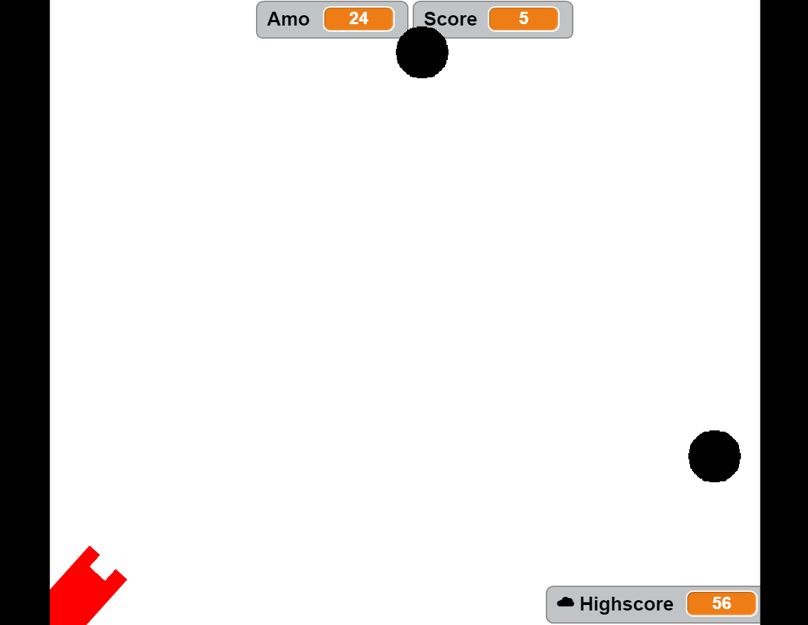

My name project
Description:
Use scratch to design and create a program that shows my name. The requirements were to add a sprite for each letter in my name and give them 3 unique behaviors. The program needed to run when the green flag was pressed and for extra credit I added a function to reset the scene to the beginning each time the green flag was clicked.
Concepts Learned:
- Using event blocks - green flag pressed, when key pressed
- Conditional statements - used if statements to say if this happens do this
- Used loops - I used a forever block to have it jump forever
- Sprites - I created my sprites in the sprite editor
- Movement - I used the x and y values to make my sprites move to their original
location when the green flag was clicked, I used a variable to make my sprites jump,
and I used the change size to have my sprites change size.
Computer buying project:
Description:
Interview someone about what they would want in a computer if they were to buy one. Then pick four computers that fit their description and create a scratch presentation explaining each computer and finally choosing which one would be best for the person you interviewed.
Concepts Learned:
learned how to create a page system using a variable called page#. I set each slide to a certain page# and also some pictures.
Final Project

Description:
The game had to have a timer, keep score, have a help screen with directions, reset when the green flag is clicked, let the player know when they win, and have the game get harder as it goes on.
Concepts Learned:
I learned how to make something pop up on a random timer using wait pick random. Also I learned how to have one sprite point in the direction of another one by using set in direction of sprite.